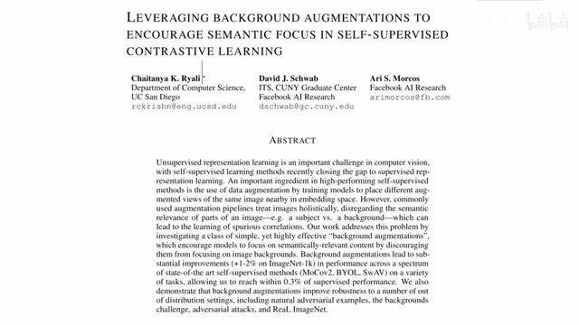
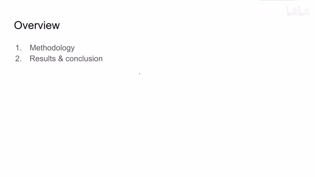
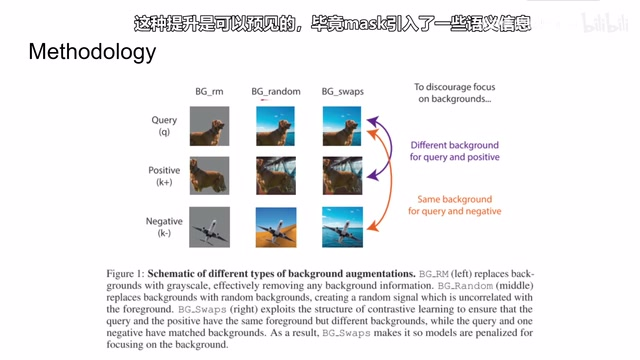
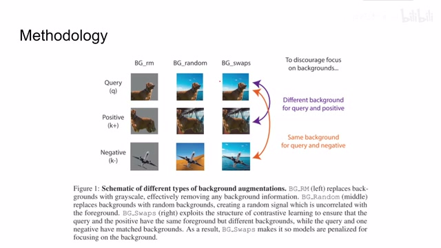
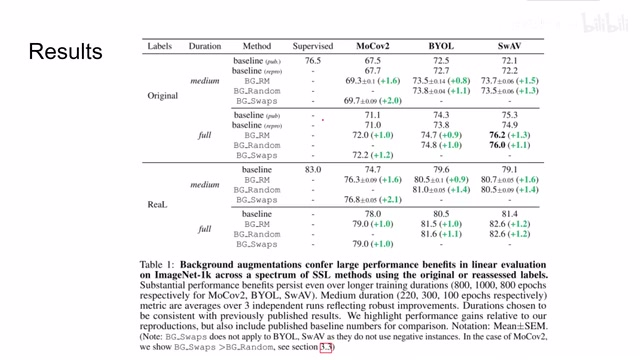
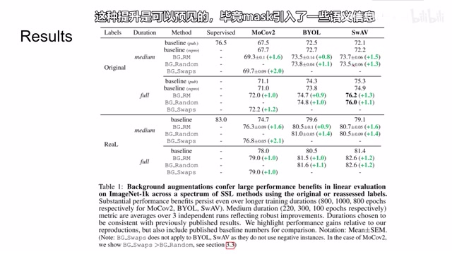
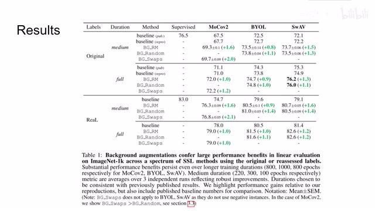
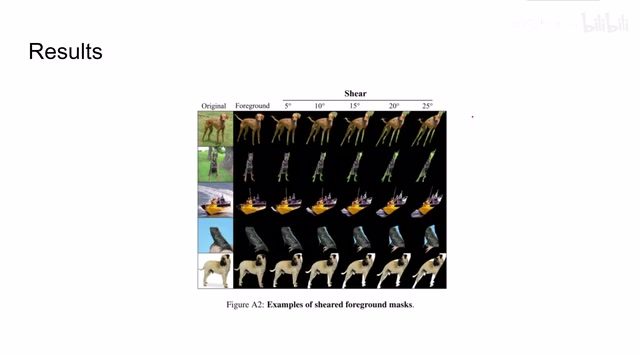

← 返回阅读库 · 原论文目录
论文讲解阅读文档 · 表征学习 · v168
Leveraging BG AUG to encourage semantic focus in SSCL[2103.12719]
视频时长 00:04:34；讲解文字 1,611 字符；提取讲解画面 10 张。按视频原顺序阅读，每段文字保留时间戳。
文字来自整段视频的自动语音转写，按自然停顿分段，并与 PPT / 论文页面 / 演示画面对齐。未将讲解压缩为摘要；术语、数字和口述公式请结合画面及原论文核对。 阅读稿已校正规范部分明确术语误识别；原始逐字稿和每处修改记录另行保留。
讲解画面为源视频截图（640×360），不是可编辑 PPT 文件。全片按每秒 2 帧扫描内容变化，逐步展开页保留；连续动画保留代表画面。清晰度受源视频限制。
下载完整资料包 · 含离线 HTML、PDF、Word、全部 PPT 画面和字幕。
原论文与材料
Characterizing and Improving the Robustness of Self-Supervised Learning through Background Augmentations · 下载完整 PDF（67 页）
按时间阅读
00:00:00–00:00:29 · 画面 001

00:00:00–00:00:29 · 画面 001大家好,今天我们来迅速说一篇论文 Leveraging Background Augmentation to Encourage Semantic Focus in Self-Supervised Contrastive Learning。那么这篇论文的方法其实已经在标题中说得很明白了，就是我通过一种新的背景增强的手段来让我们的 self-supervised 的方法能够更加关注到我们的图像的语义本身，而不是说背景的这些噪声。
00:00:29–00:00:35 · 画面 002

00:00:29–00:00:35 · 画面 002那么我们就直接看到本文的方法还有结果，那其实非常直接，相对于传统的这些图像增强，比如说你放大缩小水平翻转旋转给切个块或者是变成灰色等等等等，这种这种图像增强呢，自我认为呢，这些都是这个图像处理上的这些图像增强，它并没有呢把我们的语义信息包含到这个图像增强当中。
00:00:35–00:01:38 · 画面 003
00:00:35–00:01:38 · 画面 003那最简单的道理是，你的网络里的模型它可能是不会去区别前景和背景的，也就是说有可能背景呢帮助了这个网络来对我们的图像做了分类，这个呢不是我们想要的一个结果，所以呢在本文中呢，作者就提出了，我要能不能根据语义信息来设计出新的图像增强的方式，那么这里呢，作者就设计了三种，第一种就是我直接把背景去掉。用灰色来填充这个背景，这叫 background remove，第二种呢就是我把这个背景替换成其他随机的背景，这个叫 background random，第三个呢也是最有意思的就是我换一下不同的背景，那么为了让我们的这个模型能够根据前景来区别不同样本之间的差异，而不是根据背景呢，我们把 positive samples 和 query。
00:01:38–00:01:40 · 画面 004

00:01:38–00:01:40 · 画面 00400:01:40–00:02:15 · 画面 005

00:01:40–00:02:15 · 画面 005它们的背景设置成不一样的但是我们把 negative samples 和 query 它们设计的背景是一样的这样子就直接的附近了我们的模型去观察前景的信息去学习前景的特征那么直接来看实验坐在这里测试了 MoCo-v2、BYOL 和 SwAV 那么右边这两个我们之前在视频中都已经介绍过了
00:02:15–00:02:36 · 画面 006

00:02:15–00:02:36 · 画面 006可以看到，无论采用哪一种这个 self-supervised learning 的方法，那么应用上本文的这些图像增强手段之后呢，他们的性能呢都提升了接近一个百分点，甚至呢到了两个百分点，不过比较遗憾的，像 byol SwAV 这些方法呢，他是没有使用这个负样本的，也就是说这个 background swaps 我们更换样本呢，是没有办法应用在这两个算法里面的。
00:02:36–00:03:24 · 画面 007

00:02:36–00:03:24 · 画面 007但是呢，我觉得这个 background random 其实呢，也一定程度上达到这个 background swapped 它的这个效果，那么除此之外呢，作者还做了很多实验，比如说在 Moco V2 里面，它通过控制变量，我给正样本还是只给负样本等等这些变量的控制的方法来得出结论说呢，每一部分的设计呢，都是对性能改善有帮助的，还有像 transfer learninglonger training 这些东西，作者都测试了。
汇报的结果来看都还是不错的，而且在增加了一些图像增强策略之后，我们的模型对一些对抗攻击它更有鲁棒性了，变得不是那么敏感了，这些都是很大量的实验，具体结果大家可以在论文原文中查看，当然这篇论文还是 preprint，他们还在继续这篇论文的工作，所以这里我只做一个简单的介绍。
00:03:24–00:03:48 · 画面 008

00:03:24–00:03:48 · 画面 00800:03:48–00:04:33 · 画面 009

00:03:48–00:04:33 · 画面 009那么除此之外在副作中呢，作者还汇报了一个比较有意思的事情，就是假如我们的前背景的这个 mask 它并不是那么准确，比如这里作者在原来的这个 mask 的基础上给它增加了这些扭曲，还有比如增加了平移增加旋转等等增加了这些扰动，作者发现呢，即便如此模型的性能依然得到改善，所以对于前景这个 mask 呢，有 noise 的情况下呢，本文的方法呢，依然能够 work。
这也是很有意思的发现，好的，那么以上就是我对这篇论文的简单的分析，这篇论文的思想也是非常非常的简单，但是呢，作者做了很充分的实验，欢迎感兴趣的朋友呢，还是在原文中查看，那么感谢您的收看，再见。
00:04:33–00:04:34 · 画面 010
00:04:33–00:04:34 · 画面 010转写与来源说明 · 0 个自动复核提示
保留 10 个原始语音片段，0 个片段触发自动复核提示。提示仅用于定位可能的术语、重复或识别问题，不等于已确认错误。
讲解画面为源视频截图（640×360），不是可编辑 PPT 文件。全片按每秒 2 帧扫描内容变化，逐步展开页保留；连续动画保留代表画面。清晰度受源视频限制。
原视频：paper/合集_2026-10-16_表征学习/[论文简析]Leveraging BG AUG to encourage semantic focus in SSCL[2103.12719].mp4
SHA-256：af9f3876a9209c3cd6741a335c8f133019655308842fa04a751bdb52c840f535
全文按视频语音与画面制作。原论文可从上方链接下载；完整资料包保留全文、原始逐字稿、字幕和校对记录。